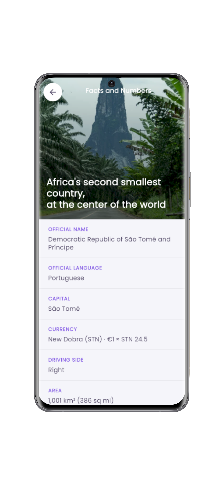

Discover São Tomé and Príncipe
without needing another app.
Educational quiz about history, geography, culture, gastronomy, languages and music of the archipelago. Free, no ads, works offline.
Educational quiz about history, geography, culture, gastronomy, languages and music of the archipelago. Free, no ads, works offline.
No personal data collected. Your progress stays on your device, nothing is sent to external servers.
No ads, no in-app purchases, no subscriptions. Just knowledge.
After the first launch, play anywhere — no internet connection needed.
Browse through the STP Quiz screens and discover the experience before installing.


Each topic has questions and a dedicated educational page. Everything unlocked from the first tap.
From the Portuguese arrival to independence in 1975.
Two volcanic islands on the Equator.
Creole identity between Africa and Europe.
Tropical flavours between the sea and the forest.
Portuguese and local creoles coexist daily.
Traditional rhythms between celebration and memory.
Light, dark or system theme. Portuguese, English or French. And if you want to go further, set your own primary and secondary colour.

Start with context: location, area, population, capital, highest point and more.

STP Quiz is a personal project to promote São Tomé and Príncipe while deepening mobile development skills with Flutter. Built as an independent product, with care for design details and privacy.
Yes. No subscriptions, no in-app purchases and no ads. Everything you see is available from the first launch.
No. Content is local and works offline after the first launch. You only need internet for the initial Play Store download.
Only on your device, through Android's local preferences (SharedPreferences). Nothing is sent to external servers.
Portuguese, English and French — or the system language by default. The choice can be changed inside the app, in Settings.
Yes! Send to vagneripg@gmail.com — whenever possible with the source so the information can be validated.
Inside the app go to Settings > Clear Cache. This removes all saved results.
Free, no ads and no personal data. Just knowledge about one of the most beautiful countries in the Gulf of Guinea.